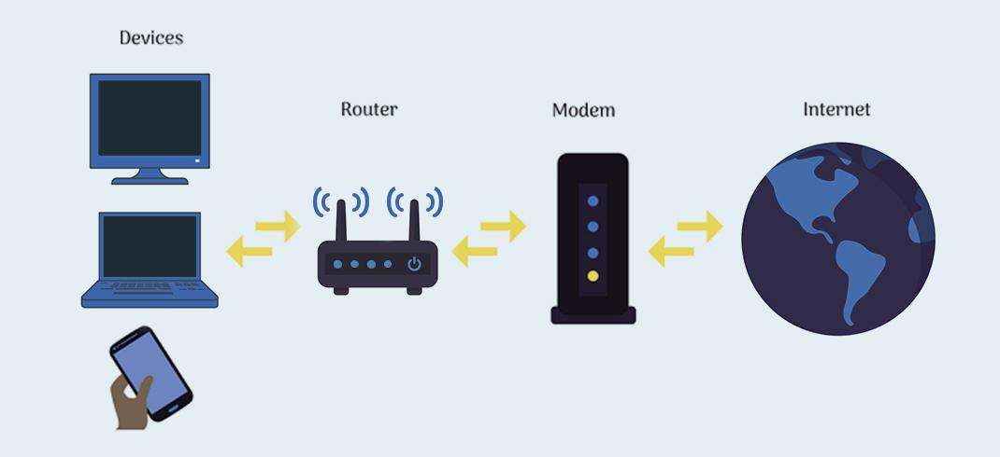

¿Qué es la Telecomunicación?
La telecomunicación es la transmisión de información a distancia utilizando señales eléctricas, electromagnéticas u ópticas. Es la base de tecnologías como Internet, telefonía y redes de datos.
Componentes Principales
Un sistema de telecomunicación está formado por:
- Dispositivos de entrada: Captan la señal (micrófonos, cámaras, sensores).

- Dispositivos de salida: Reciben y muestran la información (pantallas, altavoces, impresoras).
- Procesamiento: Equipos que gestionan y transforman los datos (servidores, routers, módems).
- 
- Transmisión: Medios físicos o inalámbricos que transportan la señal (cables, fibra óptica, ondas de radio).
¿Cómo Funcionan?
Los sistemas de telecomunicación operan mediante:
- ✔ Modulación: Adaptación de la señal para su transmisión.
- ✔ Codificación: Conversión de datos a formatos compatibles.
- ✔ Protocolos: Reglas que garantizan una comunicación eficiente (TCP/IP, HTTP).
Comunicación Alámbrica vs. Inalámbrica
Comparación entre los dos tipos principales de comunicación:
| Característica |
Comunicación Alámbrica |
Comunicación Inalámbrica |
| Medio de transmisión |
Cables (Ethernet, fibra óptica) |
Ondas electromagnéticas (WiFi, 5G) |
| Velocidad |
Mayor ancho de banda |
Depende de la distancia y congestión |
| Estabilidad |
Menor interferencia |
Sensible a obstáculos e interferencias |
| Movilidad |
Limitada por cables |
Conexión sin restricciones físicas |
Tecnologías más Usadas
Ejemplos de tecnologías alámbricas e inalámbricas:
- Alámbricas:
- Ethernet (redes locales por cable).
- Fibra óptica (alta velocidad y larga distancia).

- Cable coaxial (televisión por cable, Internet).

- Inalámbricas:
- WiFi (conexión local sin cables).
- Bluetooth (transferencia de corto alcance).
- NFC (pagos e identificación por contacto).
- 4G/5G (telefonía móvil e Internet).
3. Modulación y transmisión analógica y digital
Concepto de modulación y su importancia en la transmisión de señales.
La modulación es el proceso en el que una señal de alta frecuencia, conocida como señal portadora, se modifica en función de una señal moduladora, que es la que contiene nuestra información.
La modulación es importante porque permite la multiplexación, que es la transmisión de varias señales en un mismo canal. Además también optimiza el uso del espectro electromagnético, que es finito, y mejora la eficiencia y la velocidad de transmisión de señales, como en 4G, 5G y WiFi.
Por último, la modulación también contribuye a proteger la señal de interferencias y ruidos, mejorando así la calidad de la información transmitida y disminuyendo la interferencia entre canales.
A su vez, cada señal modulada ha de ser demodulada al ser recibida por el receptor, para descifrar y separar la frecuencia portadora de la moduladora.
Explicación de la diferencia entre las señales analógicas y digitales.
Las señales analógicas y digitales tienen varias diferencias clave. Las señales analógicas son continuas en el tiempo y en amplitud, pueden asumir un número infinito de valores dentro de un rango determinado y son más susceptibles al ruido y las interferencias.
Por otro lado, las señales digitales son discretas en el tiempo y en amplitud, representan la información mediante un conjunto limitado de valores, generalmente 0 y 1, y son menos susceptibles al ruido, lo que facilita la corrección de errores.
Las señales analógicas utilizan un rango continuo de valores para representar información, mientras que las señales digitales utilizan 0 y 1 discretos para representar información.
Ejemplos de modulación analógica (AM, FM) y digital (ASK, FSK, PSK).
- Modulación analógica:
- Amplitud Modulada (AM): este método cambia la amplitud de la frecuencia portadora para que se ajuste al de la frecuencia moduladora, para dar como resultado una frecuencia con la Amplitud Modulada.
- Frecuencia Modulada (FM): este método cambia la frecuencia portadora, o su ancho de banda, en función de los puntos más altos o más bajos de la frecuencia moduladora, para dar como resultado una señal con la Frecuencia Modulada.
- Modulación digital:
- Amplitude Shift Keying (ASK): en este método, al ser de modulación digital, lo que se modifica es la amplitud pero de tal manera que se asocie cierta amplitud a un 1 y la otra a un 0.
- Frequency Shift Keying (FSK): en este método lo que se modifica es la frecuencia de tal manera que cierto ancho de banda se asocie o a un 1 o a un 0.
- Phase Shift Keying (PSK): en este método lo que se modifica es la fase, o el dónde empieza cada frecuencia (de 0º a 360º), asociando cada valor de grados a 0, 1 o a combinaciones de bits (por ejemplo 00, 01, 10 y 11).
4. Propagación de las ondas electromagnéticas: Comunicación vía satélite
Principios de propagación electromagnética:
La propagación de ondas electromagnéticas es el fenómeno por el cual las ondas viajan a través del espacio, o de un medio, transportando energía e información de un punto a otro. Las ondas son oscilaciones autosostenidas de campos eléctricos y magnéticos que son mutuamente perpendiculares y también perpendiculares a la dirección de propagación de la onda.
Para comprenderlas hay que tener en cuenta los siguientes puntos:
- Generación:Las ondas electromagnéticas se generan mediante cargas eléctricas o corrientes variables en el tiempo. Cuando una carga eléctrica oscila, produce campos eléctricos y magnéticos variables.
- Velocidad:La velocidad de las ondas electromagnéticas depende del medio en el que se encuentren. En el espacio viajan a la velocidad de la luz, pero en el aire la velocidad baja debido a interacciones con el material.
- Tipos de propagación: Cuando las ondas electromagnéticas encuentran materia, pueden ser absorbidas (la onda es captada por el material), reflejadas (las ondas rebotan en una superficie), refractadas (cambian de dirección al pasar a otro medio), transmitidas (la onda atraviesa un material sin dificultad) o dispersadas (la onda se esparce en múltiples direcciones). Todas estas interacciones dependen de las propiedades del medio y de la longitud de onda de las ondas.
Funcionamiento y aplicaciones de las comunicaciones vía satélite:
La comunicación vía satélite es un sistema que permite la transmisión de información como voz, vídeo y otros datos a través de un objeto en órbita alrededor de la Tierra conocido como satélite, además de la recepción y transmisión terrestre a través de antenas.
Este sistema utiliza señales de radio de alta frecuencia para transmitir datos, lo que generalmente da como resultado una conexión más estable y rápida que otras formas de comunicación.
Las aplicaciones de la comunicación vía satélite incluyen desde la comunicación entre distancias extremadamente largas, incluso las que menos infraestructura terrestre poseen; o la menor susceptibilidad a interferencias electromagnéticas en general, por no hablar de las encriptaciones de datos seguras.
Estas comunicaciones se usan en medios conocidos como la transmisión y recepción de televisión, telefonía, radio y datos.
5. Redes y servicios de comunicación: Telefonía, radio, televisión y datos
Las redes de comunicación son sistemas que permiten la transmisión de información entre diferentes dispositivos o usuarios. Según su tamaño y alcance, existen distintos tipos de redes:
- LAN (Red de Área Local): Cubre un área pequeña, como una casa, una oficina o un colegio. Es rápida y se usa para conectar ordenadores, impresoras y otros dispositivos en un mismo edificio.
- MAN (Red de Área Metropolitana): Cubre una ciudad o un conjunto de edificios. Es más grande que una LAN pero más pequeña que una WAN.
- WAN (Red de Área Amplia): Cubre grandes distancias, incluso países o continentes. Internet es el mejor ejemplo de una red WAN.
Los servicios de comunicación más comunes son:
- Telefonía: Transmisión de voz a través de redes fijas o móviles. Tecnologías: 2G, 3G, 4G y 5G.
- Radio: Transmisión de audio mediante ondas electromagnéticas. Se puede escuchar a través de radios tradicionales o en línea.
- Televisión: Transmisión de imagen y sonido. Puede ser por antena (TDT), por cable o por internet (streaming).
- Datos: Envío de información digital a través de redes (mensajes, correos, archivos, navegación web, etc.). Utiliza redes como WiFi, fibra óptica o datos móviles.
6. El espacio radioeléctrico. Control y protección de datos
El espacio radioeléctrico es el conjunto de frecuencias del espectro electromagnético que se usan para transmitir información sin cables, como en la radio, televisión, wifi o móviles. Este espacio es limitado y debe estar regulado para evitar interferencias entre señales. Por eso, existen organismos nacionales e internacionales que gestionan su uso.
En las telecomunicaciones, es fundamental proteger la información que se transmite. Por eso, se aplican normas y medidas para asegurar la privacidad y la confidencialidad de los datos. Esto incluye:
- Uso de contraseñas y cifrado de datos.
- Leyes como el Reglamento General de Protección de Datos (RGPD) en Europa.
- Programas de seguridad informática (antivirus, firewalls, etc.).
Todo esto ayuda a evitar el acceso no autorizado, los robos de información y los ciberataques.